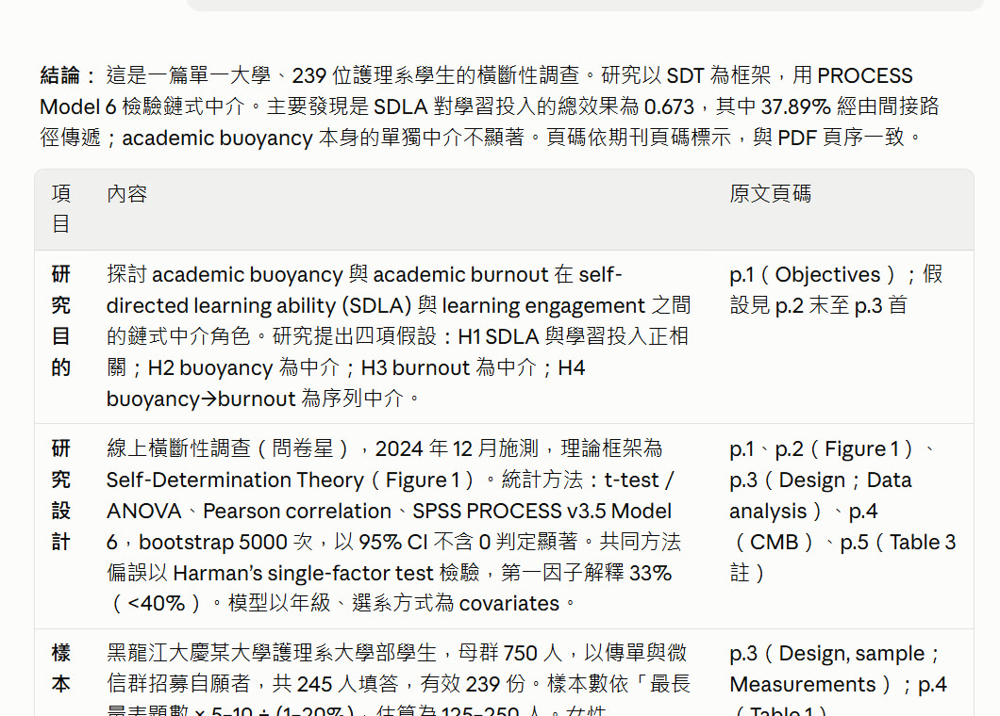

為什麼 AI 時代最好用的是它，以及十個馬上用得到的語法
# 文獻筆記 **研究問題** - 對象：護理系學生 - 設計：橫斷性研究
Markdown 用一般鍵盤符號標出標題、粗體、清單；檔案就是純文字（.md），任何程式都打得開。

你在 AI 回答裡看到的排版，背後都是 Markdown。
標題分段、清單列點，AI 更容易抓到你要什麼。
| Word（.docx） | Markdown（.md） | |
|---|---|---|
| 檔案內容 | 排版資訊包在檔案裡 | 看得到的就是全部 |
| 用什麼開 | 需要 Word 或相容軟體 | 記事本、Obsidian、VS Code、GitHub |
| 貼給 AI | 常要先複製出文字 | 整段直接貼，結構保留 |
| 放很多年 | 依賴軟體版本 | 純文字，十年後也打得開 |
論文定稿仍用 Word 投稿；Markdown 適合筆記、草稿、和 AI 來回討論。
# 研究背景→
## 文獻探討→
### 自主學習→
**重要發現**→
*待確認*→
- 自主學習→
1. 先讀摘要→
[官網](https://obsidian.md)→
> 回原文核對→
| 變項 | 工具 | |---|---| | 焦慮 | STAI |→
| 變項 | 工具 |
|---|---|
| 焦慮 | STAI |
- [ ] 補測量工具 - [x] 讀完 Liu 2026→
用 `t.test()` 比較兩組→
t.test() 比較兩組待辦清單在 Obsidian、GitHub 都能直接勾選；反引號包起來的文字會保持原樣，適合放程式指令。
背景、任務、輸出格式各一段，AI 不容易漏掉條件。
要表格就說「Markdown 表格」，回答可以直接貼進 Obsidian。
# 標題 | 大標題 |
## 標題 | 小標題 |
**文字** | 粗體 |
*文字* | 斜體 |
- 項目 | 清單 |
1. 項目 | 編號 |
[文字](網址) | 連結 |
> 文字 | 引用 |
| 欄 | 欄 | | 表格 |
- [ ] 事項 | 待辦 |
在 Obsidian 裡，[[筆記名稱]] 是連到另一則筆記；這是 Obsidian 加上的語法。
# Markdown